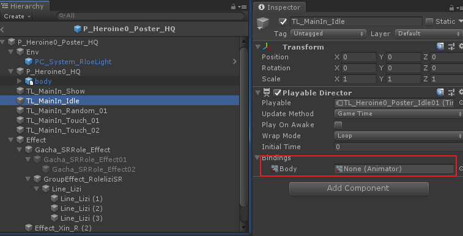
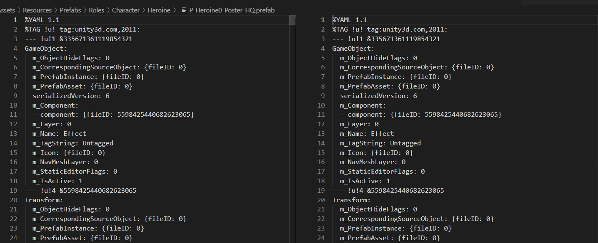
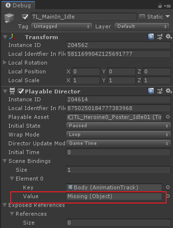
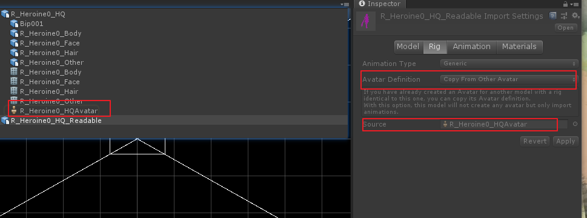

这几天由于分支开发，发现主干迁移开辟的新分支上部分预制体挂载的timeline Binding的Animator引用丢失了

想到去对比版本管理器上提交的日志是否有改动差异，结果发现并没有。然后将不同版本的角色预制体拖进VSCode对比相关文件，发现一模一样，根本没差异。

这很令人奇怪，明明预制体的信息和提交都没发生变化，但在最新的分支工程却丢失了引用资源，但是同丢失引用资源inspector下会是missing value显示。
在Google下通过搜索”unity timeline bind”关键词，查到一篇似乎有帮助的博客
于是就开启Debug模式对比了一下两者差异，发现分支工程中的animator绑定的value字段为missing value。

这个结果有些意思，默认下是为空，但是Debug模式下确是引用为空，而且prefab以文本形式打开确实有引用的guid的。这时，旁边负责角色资源预制体工具生成的同学想到了什么，当即把两者所用的FBX文件分别拖入场景中，发现分支工程里的模型文件并没有生成Animator，于是去找引擎大佬咨询是不是模型资源导入做了特殊的后处理操作。经过引擎大佬的查看，是由于此模型文件Rig设置中Avatar Definition改为Copy From Other Avatar，引用了其他模型文件中的avatar，从而自己这里就不再创建生成avatar，进而也就不会自动创建AnimatorController了。

顺便也给我解释了这样改动的原因是同一角色的预制体有多份模型文件的话这样就就可以复用avatar而不用再多一份内存开销。
总结至此所有的困惑与问题都已解决，预制体资源文件对比相同，但是角色的animator默认是由带有avatar的模型文件生成的，如果想要不由fbx生成ac，那么就将其删掉，主动在prefab上挂载生成新的，那么这个ac引用就属于预制体本身引用关系，而跟fbx文件就无引用关系了。